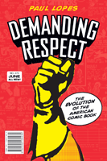

From pulp comics to Maus, the story of the growth of comics in American culture
From pulp comics to Maus, the story of the growth of comics in American culture


 From pulp comics to Maus, the story of the growth of comics in American culture
From pulp comics to Maus, the story of the growth of comics in American culture

|  |
Demanding RespectThe Evolution of the American Comic BookPaul Lopespaper EAN: 978-1-59213-443-4 (ISBN: 1-59213-443-2) |
"Demanding Respect is a solid, well-researched social history of the comic book in North America—detailed, thorough, and well-written. Theoretically sophisticated, it moves beyond the existing emphasis on fan culture to encompass the entire comic book art world. This is a valuable contribution to the literature on American popular culture."
—Laura Grindstaff, Associate Professor Department of Sociology at the University of California, Davis
How is it that comic books—the once-reviled form of lowbrow popular culture—are now the rage for Hollywood blockbusters, the basis for bestselling video games, and the inspiration for literary graphic novels? In Demanding Respect, Paul Lopes immerses himself in the discourse and practices of this art and subculture to provide a social history of the American comic book over the last 75 years.
Lopes analyzes the cultural production, reception, and consumption of American comic books throughout history. He charts the rise of superheroes, the proliferation of serials, and the emergence of graphic novels. Demanding Respect explores how comic books born in the 1930s were perceived as a "menace" in the 1950s, only to later become collectors’ items and eventually "hip" fiction in the 1980s through today.
Using a theoretical framework to examine the construction of comic book culture—the artists, publishers, readers and fans— Lopes explains how and why comic books have captured the public's imagination and gained a fanatic cult following.
Excerpt available at www.temple.edu/tempress
"[Lopes] provides a persuasive, accessible framework for understanding the path that American comics have taken from early derision to the level of respectability that they enjoy today."
—Library Journal
"Mr. Lopes approaches this study [of comic books] as something worthy of a sociological effort.... Lopes is at his best when he tries to tap into what kept this lowly form chugging along.... 'Demanding Respect' is an enjoyable, not too scholarly read."
—Washington Times
"The author's significant contribution is his analysis of the less-studied era from the 1980s onward.... Lopes demonstrates the significance of the shift from mass-market comics of the 1930s-80s to the fanboy subculture that dominates today, as consumers started to clamor for more-complex storylines, follow creators rather than title characters, and demand ‘respect’ for the comics genre—as the book's title indicates.... [T]his is a useful contribution to the field. Summing Up: Recommended"
—CHOICE
"An idiosyncratic, though clearly written, overview of the American comic book industry that will be familiar to many fans of the form, partnered with a novel analytic framework."
—Contemporary Sociology
"[W]hat sets this book apart is the author’s investigation of the evolution of comic book culture as opposed to simply the history of the comic book industry. In other words, Lopes expands our understanding of the cultural context that shaped and was shaped by comic books during the mid- to late-twentieth century.... Lopes’ sensitivity to the differences between comic book genres has allowed him to make some important observations about the industry’s development. Refusing to view comic books as a homogenous mass of cheap pulp, Lopes has sifted through the various genres to create a balanced, nuanced portrait of what has been, until recently, a largely ignored segment of American cultural produce."
—The Journal of Popular Culture
"A concise history of the American comic book industry from the 1930s to the present....this is a solid piece of work."
—The Journal of American History
"[A] useful new interpretation of the history of comic books in America.... [A] well-written book with clear explanations of complex ideas and events. Demanding Respect will be valuable for comics scholars looking for new interpretations of familiar stories as well as students and historians in search of a clear, concise yet rigorous introduction to the medium’s history."
—American Studies
"Lopes redefines the history of comics...drawing attention to a crucial shift in the history of comics from the rule of mass production to the championing of artistic integrity so familiar to their current, broader fan base.... Also intriguing is Lopes’s comprehensive lens for studying the complex history of comics in the United States.... Particularly fascinating is the ongoing discussion of material production....Lopes’s most useful analysis asks not whether comics will gain ‘respect,’ but whether they will be able to maintain the mainstream artistic integrity of the 'heroic’ age.... Lopes’s exhaustive research has provided a respectable foundation for future analysis."
—Safundi: The Journal of South African and American Studies
Acknowledgments
Introduction: The Evolution of the American Comic Book
1. The Early Industrial Age I: Pulp Logic and the Rise of the American Comic Book
2. The Early Industrial Age II: The Crusade Against Comic Books and the End of the Comic Book Boom
3. The Late Industrial Age: The Return of the Superhero and the First Comic Book Rebellion
4. From the Late Industrial to the Heroic Age: Comic Book Fandom and the Mainstream Pulp Rebellion
5. The Heroic Age II: Alternative Comics and a Rebellion from the Margins
6. The Heroic Age III: New Movements, Winning Respect, and the Rise of the Graphic Novel
Conclusion: The Development of an Art Form
Notes
Index
Paul Lopes is Associate Professor of Sociology at Colgate University. He is the author of The Rise of a Jazz Art World.
Cultural Studies
Sociology
American Studies
© 2015 Temple University. All Rights Reserved. This page: http://www.temple.edu/tempress/titles/1829_reg.html.